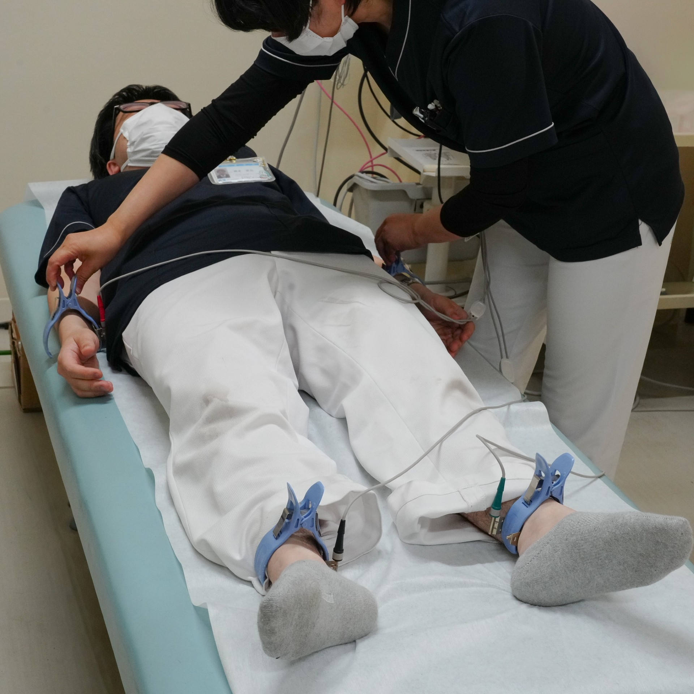
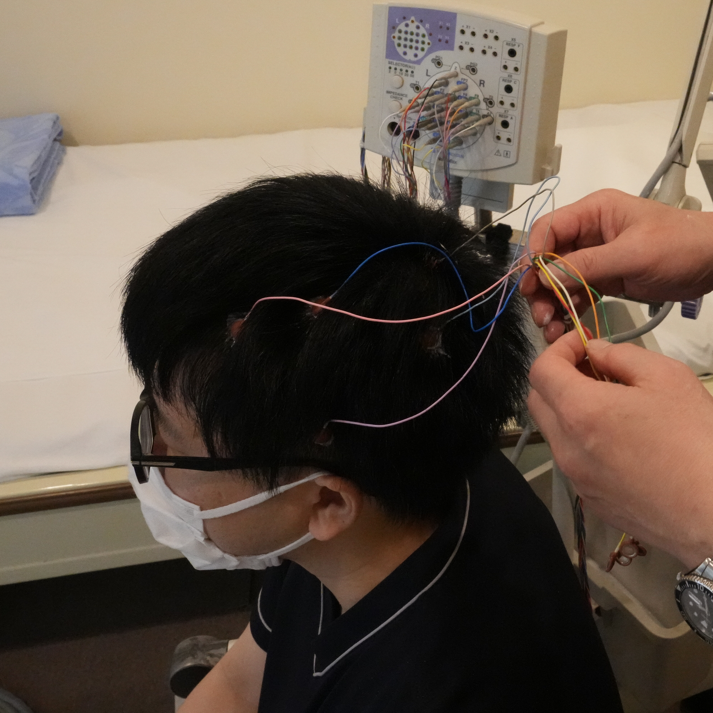
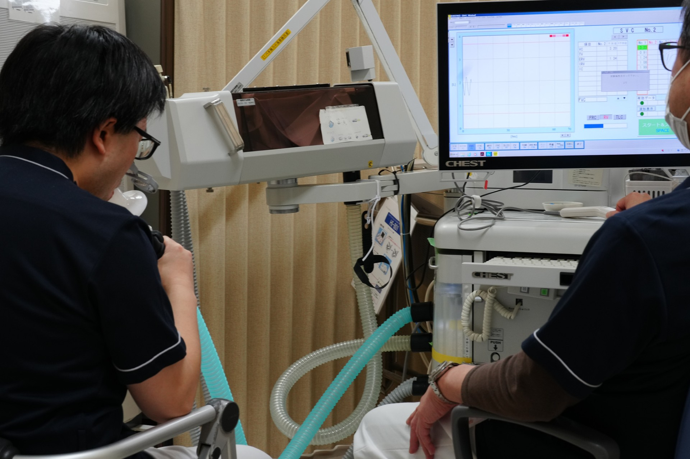

Physiological Examination
生理検査室では、心臓・呼吸・神経などの働きを、身体にできるだけ負担をかけずに調べる各種検査を行っています。
検査は主に臨床検査技師が担当し、正確で安全な検査を心がけながら、患者さんが安心して受けられる環境づくりに努めています。

心電図検査は、心臓の電気的な活動を記録する検査です。
通常の心電図検査に加えて、自律神経の機能を評価するCV-RRや心室遅延電位検査、日常生活中の心電図を記録するホルター心電図等の検査も実施しています。
その他、動脈硬化や心血管リスクの早期発見に役立つ血圧脈波検査や血管内皮機能検査もおこなっています。
当検査室では、運動や薬剤による心臓への負荷を評価する負荷心電図検査にも対応しています。
・マスター負荷心電図
・トレッドミル
・エルゴメーター
・心肺運動負荷試験(CPｘ)

脳波検査は、脳の電気的な活動を記録し、脳の状態を評価する検査です。 頭皮に電極を装着して行い、安静時や刺激を加えた際の脳波を測定します。検査による痛みはありません。検査時間は1時間程度です。
神経伝導検査は、末梢の運動・感覚神経を電気刺激により興奮させることで、その反応を筋肉や神経上から記録する検査です。
痛みを伴う検査ですので、随時患者さんに声掛けを行いながら検査を行っています。
検査時間は1時間程度です。
その他、糖尿病性神経障害スクリーニングや電流知覚閾値検査もおこなっています。
難聴の有無を発見するために、出生後早期に行う聴覚スクリーニング検査です。

呼吸機能検査では、肺の大きさや空気の出入りの状態を評価する検査や喘息の診断に役立つ呼気中NOの測定をおこなっています。
正しい検査結果を得るためには患者さんの協力が重要となるため、検査内容をわかりやすく説明し、安心して受けていただけるよう心がけています。
終夜ポリグラフィーは、いびきや呼吸、脳波、酸素飽和度など睡眠中の身体のさまざまな生理的な変化を一晩かけて記録・分析する検査です。睡眠時無呼吸症候群の診断に役立ちます。
尿素呼気試験は、胃がんの原因とされるヘリコバクター・ピロリ菌感染の有無を調べる検査です。